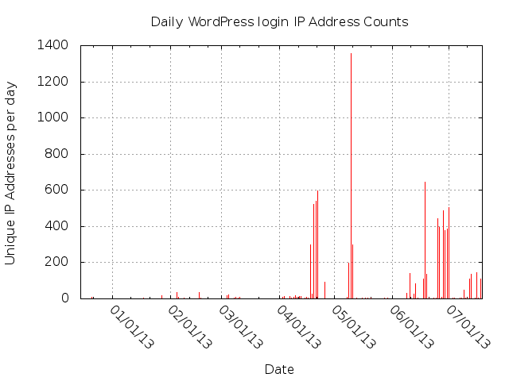
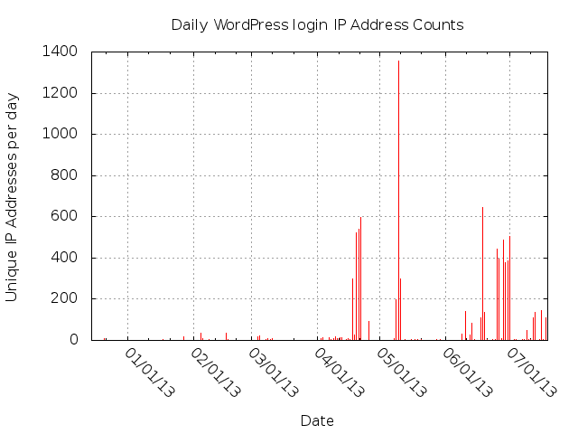
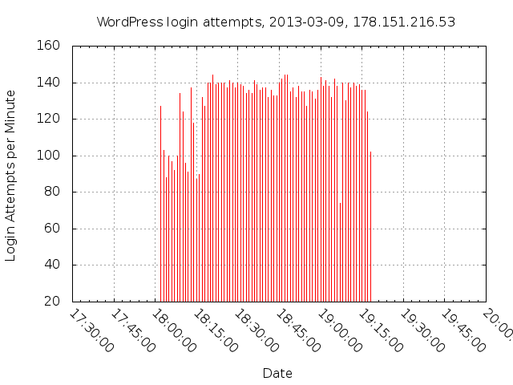

Obtaining Access
Access to the honey pot's emulated WordPress administration happened solely by automated username and password guessing. Nobody used any WordPress exploits that I could detect. This could be an artifact, as I allowed any user ID/password combo to log in as the admin user.
Some of the password guessing programs are poorly designed and implemented. Some of the guessing probably doesn't work on real WordPress installations, due to WordPress looking for certain cookies on login attempts. At least some of the automated guessers don't put appropriate cookies in their guess requests. Some of the guessers keep on guessing even after getting a successful login, but that property is what makes them show up as a "guessing session". Close examination of how malware gets downloaded and invoked shows that some brute force guessers do stop guessing after success, then drop malware into place.
One guess contained a 5,105 character-long "password string" that's apparently a concatenation of all the passwords loaded into that guesser. The "password string" came from 202.179.22.211, which p0f says was running "Windows 2000 SP4, XP SP1+, 2003". Nothing in $_SERVER and $_REQUEST for that guess looks particularly unique. I have to believe that either someone botched the format of the candidate password file, or it was an ineptly written guesser.
After I shut down the honey pot, my web server still suffered through long sessions of guessing that just got 404s. The password guessing code doesn't even bother to check the HTTP response.
Visualizing Guessing Sessions
The two charts below have the same X-axis time scale, allowing the observer to note that some sessions have a large number of unique IP addresses, while others have only a single IP address.
 

The sessions are more compact than the daily-count charts convey. The 2013-03-09 session actuall took place over 75 minutes, not over the entire day.
. 10,001 login attempts, all from 178.151.216.53, a Windows Vista or Windows 7 SP1 machine during this period. It used HTTP 1.1 Connection: Keep-alive headers. It used a single TCP connection for every 101 requests. It made about 140 requests per minute.
Multi-machine Guessing Session Example
The highest number of distinct IP addresses in a single day happened on 2013-05-10. During that day, my honey pot received 1991 log in attempts by 1358 different IP addresses, in three distinct sessions. p0f identifies about half of the the operating systems of the attackers as Windows (Vista, 7, XP, 2000, 2003), but it also identifies about 640 of the login requests as coming from various flavors of Linux. Only 1 IP address tried to log in more than 10 times, 267 IP addresses tried to log in twice, and 939 IP addresses tried to log in a single time.
Each of the 3 sessions shows what you might expect from a collection of unreliable servers: it starts strong, then as human administrators discover the guessing, or machines or software fail or get taken off-line, the number of guesses per minute tails off rapidly. This looks quite different from the single-machine guessing session illustrated above, which has a constant guess-per-minute rate over the entire span of the session.
I would call the 3 sessions "coordinated" based on the abrupt rise in guesses-per-minute alone. The IP addresses in the 3 sessions also used unique passwords. Each session had about 600-650 password guesses, of which 550 - 600 of the passwords were unique to that session. In each of the 3 sessions, only 40-50 of the passwords were guessed more than once. Taken together, these have to constitute multi-machine coordinated guessing sessions.